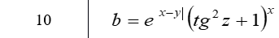

<!DOCTYPE html>
<html lang="en">
<head>
    <meta charset="UTF-8">
    <meta name="viewport" content="width=device-width, initial-scale=1.0">
    <meta http-equiv="X-UA-Compatible" content="ie=edge">
    <title>Коркуц Стас</title>
    <script>
        var x = prompt("Enter x");
        var y = prompt("Enter y");
        var z = prompt("Enter z");
        function f(x,y,z)
        {
            return(Math.exp(Math.abs(x-y))*Math.pow((Math.tan(z)*Math.tan(z)+1),x));
        }
        document.write('<p>Написать Java-скрипт для вычисления значения функции b=f(x,y,z). Значения x, y и z должны вводиться пользователем, используя метод prompt. При выводе информации предусмотреть форматирование документа, вывод текста задания, включая рисунок исходной функции, и вывод информации о разработчике скрипта.</p>');
        document.write('<br>');
        document.write('<br>x = ',x,' y = ',y,' z = ',z,' b = ',f(x,y,z));
    </script>
</head>
<body>
    
</body>
</html>